Minas Gerais é um estado brasileiro conhecido por sua rica história, belas paisagens e cultura vibrante. Localizado no sudeste do Brasil, é famoso por suas montanhas, cidades históricas e pela culinária típica, como o pão de queijo e o feijão tropeiro. Além disso, Minas é um grande produtor de minério, principalmente ferro. O estado também abriga o famoso Mercado Central de Belo Horizonte e tem um forte legado cultural, com destaque para a música e o artesanato.
Minas Gerais é um estado de grande importância histórica e cultural no Brasil. Famoso por suas montanhas, cidades históricas como Ouro Preto e Tiradentes, e pela culinária, com pratos típicos como pão de queijo e feijão tropeiro. É o maior produtor de café do país e um dos principais fornecedores de minério de ferro. A arte e a música também são fortes, com destaque para o Clube da Esquina. Além disso, Minas é conhecida por sua hospitalidade e pela tradicional hospitalidade mineira.
A história de Minas Gerais começa com a chegada dos primeiros portugueses no século XVI, quando os bandeirantes desbravaram suas terras em busca de riquezas, como ouro e pedras preciosas. Em 1700, o ciclo do ouro impulsionou o crescimento das cidades mineiras, como Ouro Preto e Mariana. Em 1720, Minas Gerais se tornou uma capitania independente de São Paulo. Em 1889, após a Proclamação da República, Minas se consolidou como um dos estados mais influentes do Brasil.
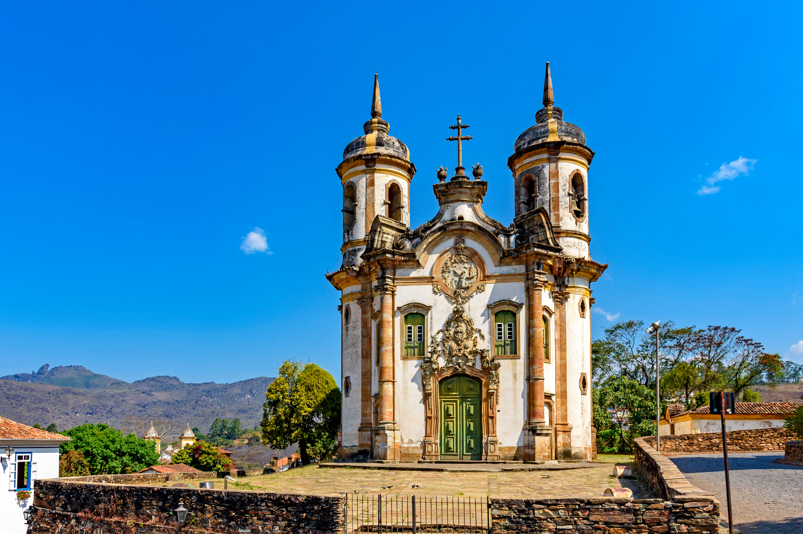
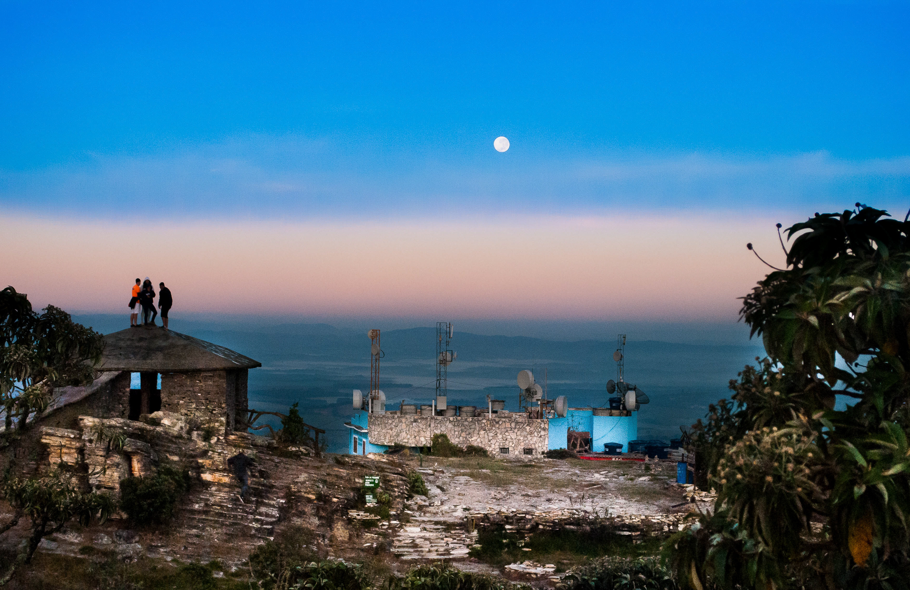
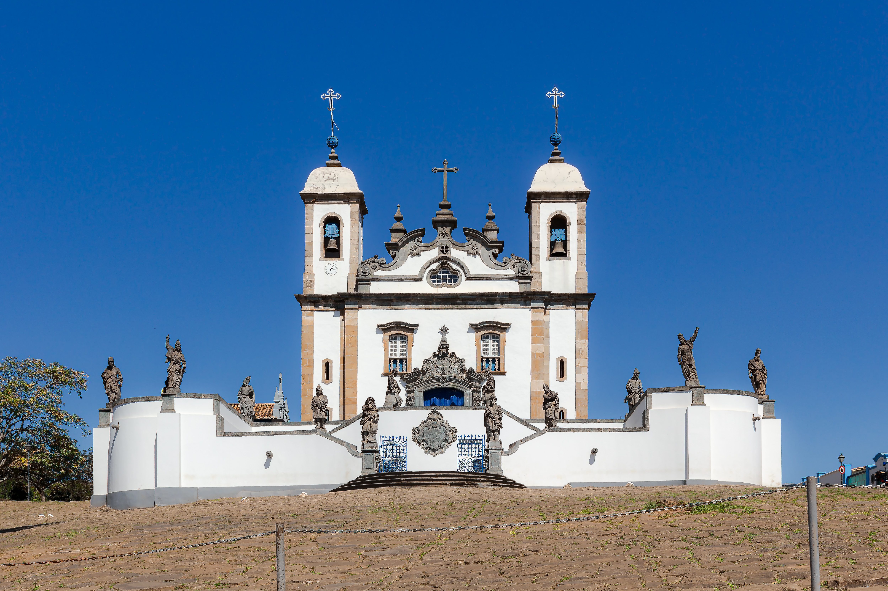
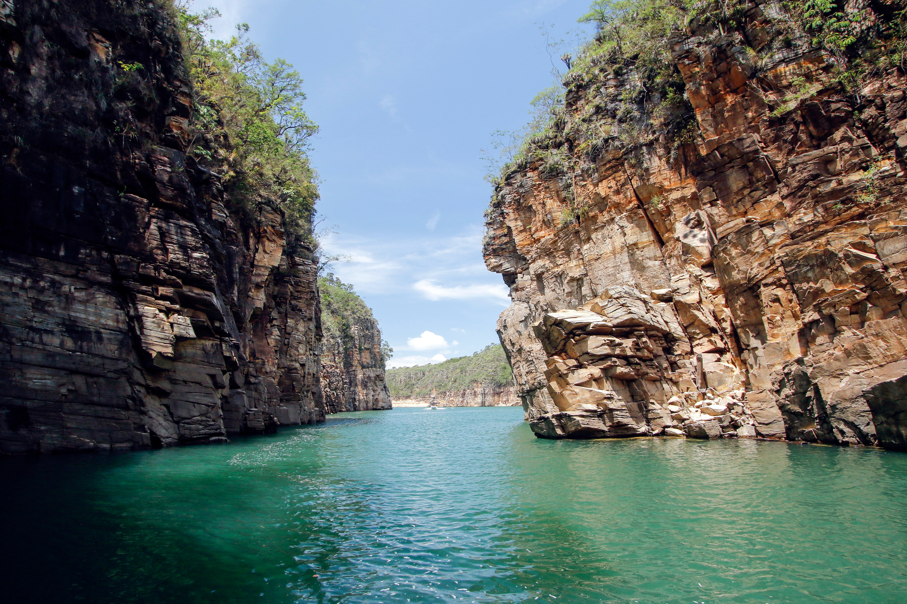
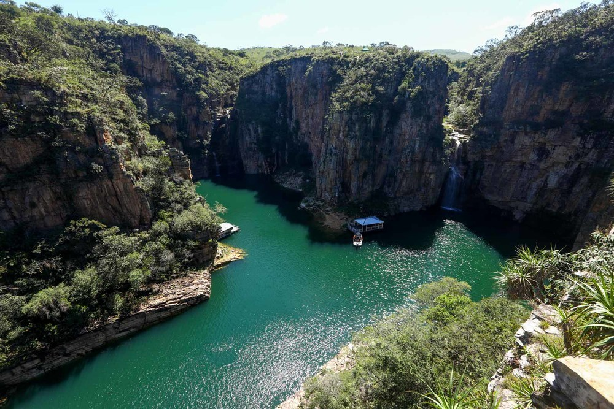
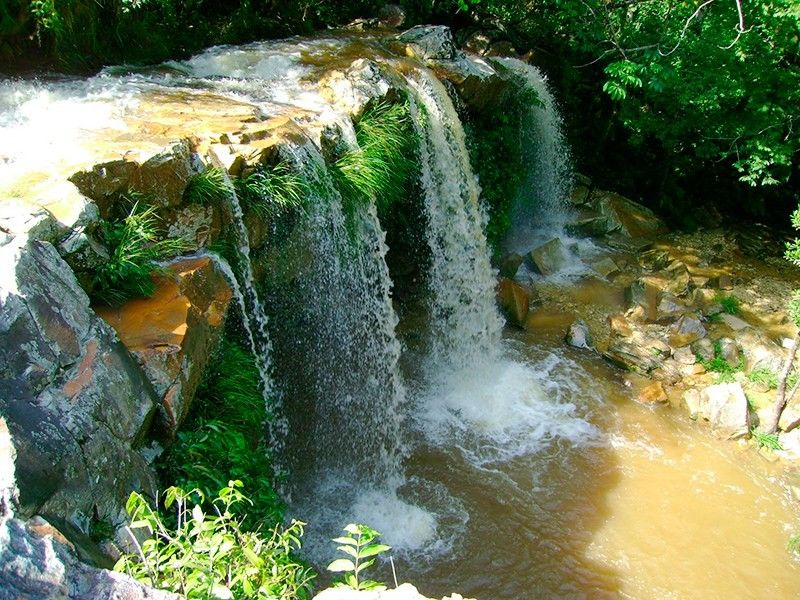
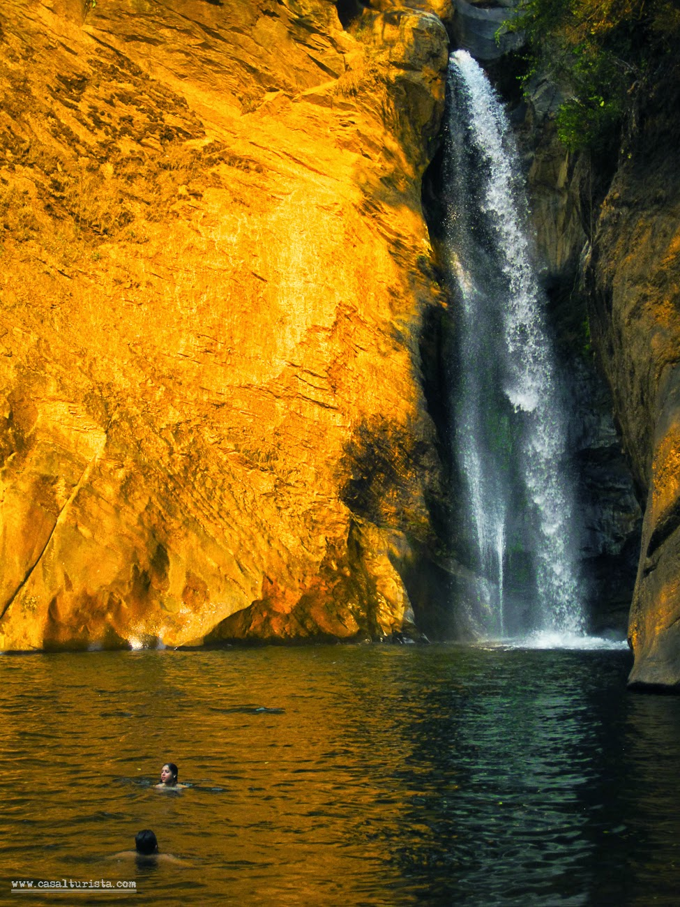
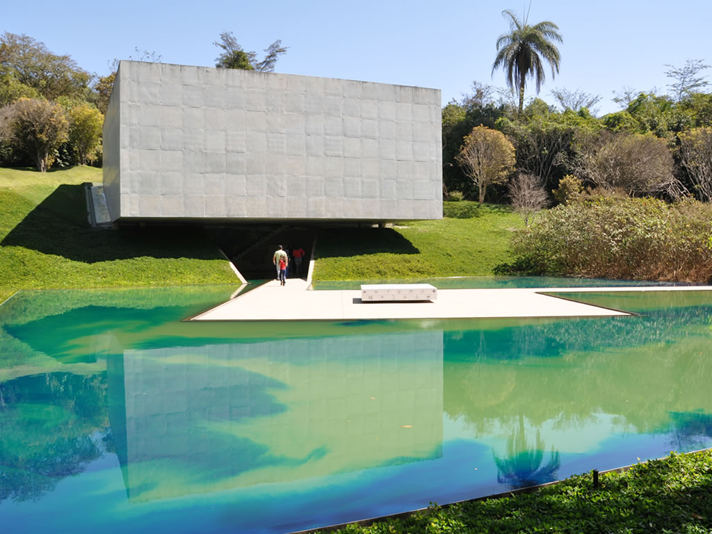
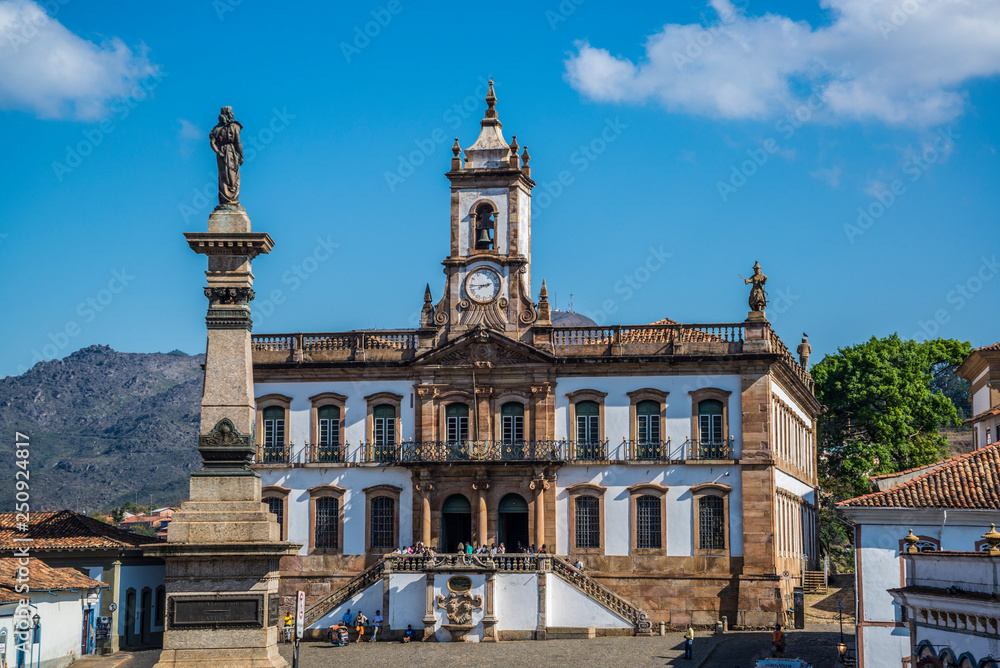
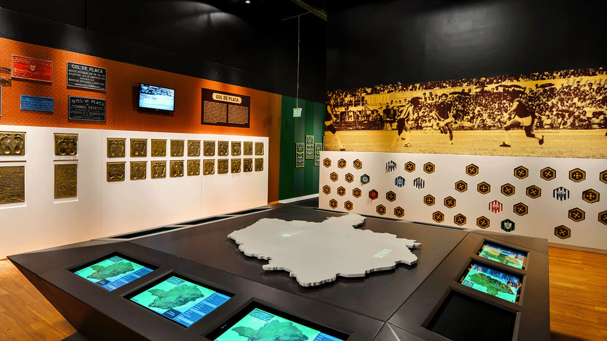
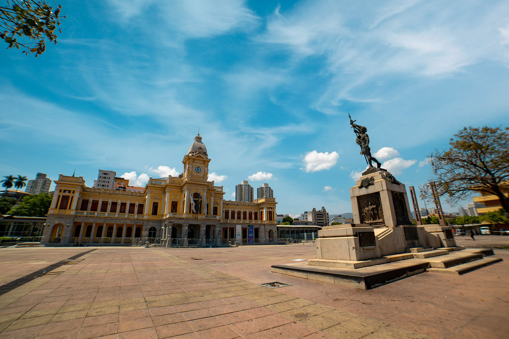